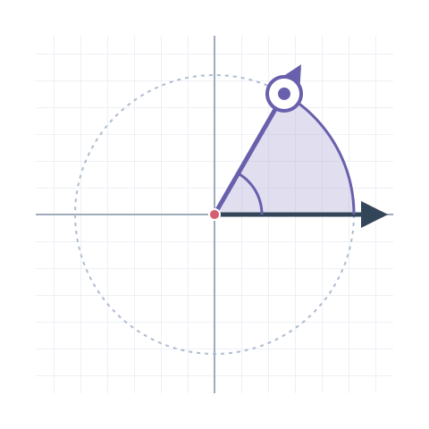

Geometría clásica
Ángulos
De una abertura a una vuelta completa: descubre los siete tipos.
KENISA · Asesor Erik · Repaso de examen
La geometría se entiende mejor cuando la puedes mover.
Un laboratorio para observar, experimentar y llegar preparada a tu examen.
ContinuarComienza con el tema 1: Ángulos.

Tu recorrido
Elige dónde quieres empezar o retomar.
Geometría clásica
De una abertura a una vuelta completa: descubre los siete tipos.
Geometría clásica
Ocho ángulos conectados: descubre sus relaciones, completa medidas y resuelve x e y.
Geometría clásica
Clasifica sus formas, une los ángulos hasta formar 180° y conecta interiores con exteriores. Tres etapas para jugar y resolver.
Geometría clásica
Cuatro lados, familias distintas. Investiga paralelismo, lados y ángulos, y entra al taller especial de trapecios.
Una vuelta de descubrimientos
Investiga sus partes, calcula perímetros y áreas y mueve un punto para conectar grados con radianes. Tres estaciones y ejercicios aleatorios sin límite, con pistas y calculadoras.